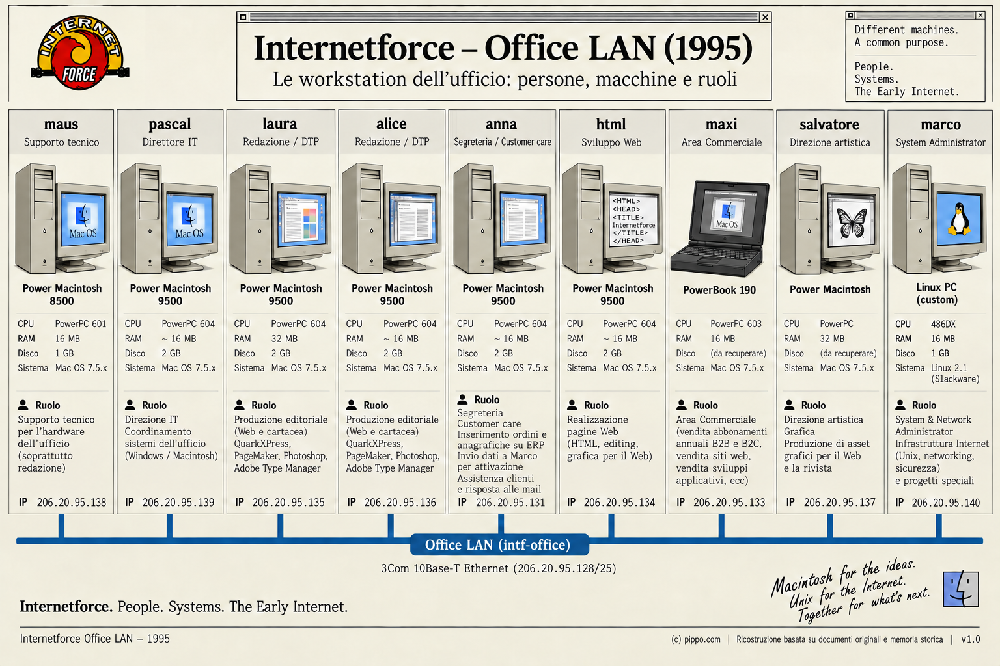

Systems Overview · 1995
Office LAN (intf-office)
L’ufficio di Milano aveva una propria rete dietro l’interfaccia office del firewall, separata dal backbone e dai segmenti dei server.

images/internetforce_office_lan.png (Office LAN 1995).Identità di rete
- Rete
intf-office·206.20.95.128/25- Gateway
206.20.95.129(interfaccia officele0del firewall)- Hub
- 3Com LinkBuilder FMS II ·
206.20.95.254 - Ruolo
- Segmento ufficio dietro il firewall: Mac e Unix/Linux.
Sistemi collegati
| Host | Indirizzo | Note |
|---|---|---|
firewall |
206.20.95.129 | gateway del segmento |
dvlp |
206.20.95.130 | host di sviluppo/build |
anna |
206.20.95.131 | segreteria / customer care |
franz |
206.20.95.132 | workstation ufficio (direzione commerciale) |
maxi |
206.20.95.133 | workstation ufficio (area commerciale) |
html |
206.20.95.134 | workstation contenuti web |
laura |
206.20.95.135 | redazione / DTP |
alice |
206.20.95.136 | redazione / DTP |
salvatore |
206.20.95.137 | art direction / grafica |
maus |
206.20.95.138 | supporto tecnico hardware |
pascal |
206.20.95.139 | direzione IT |
marco |
206.20.95.140 | workstation dell’amministratore |
PcDemo |
206.20.95.141 | PC dimostrativo |
oracolo |
206.20.95.142 | host database/web successivo |
Contesto
L’ufficio (intf-office, 206.20.95.128/25) era un ambiente di lavoro misto Macintosh e Unix/Linux dietro l’interfaccia office del firewall: redazione e DTP su Mac, area commerciale, authoring web e amministrazione tecnica su Linux. La rete dell’ufficio era il perimetro protetto da cui si amministravano la GUI del firewall e i server (regole 10, 11 e 14 di FireWall-1).
La workstation tecnica dell’ufficio è descritta nella pagina marco (Linux, 206.20.95.140).
L’immagine qui sopra è documentaria: le singole postazioni e persone non sono interattive e non hanno pagine dedicate.
Documentazione correlata
Nelle mappe
Documentazione tecnica completa
Apri il README canonico della LAN dell’ufficio
La pagina HTML è una presentazione compatta; il README Markdown è la fonte canonica.